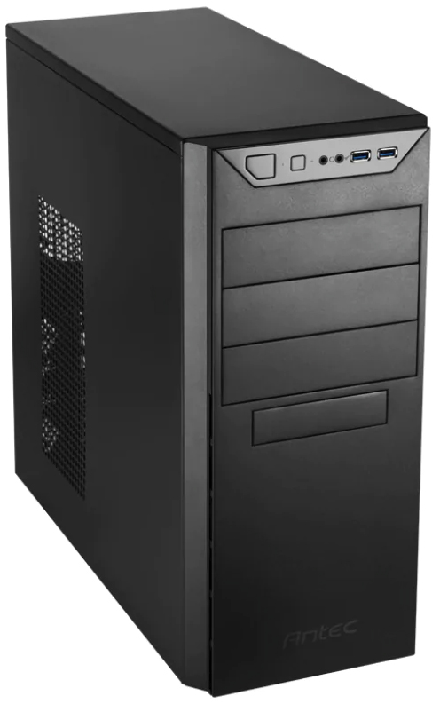
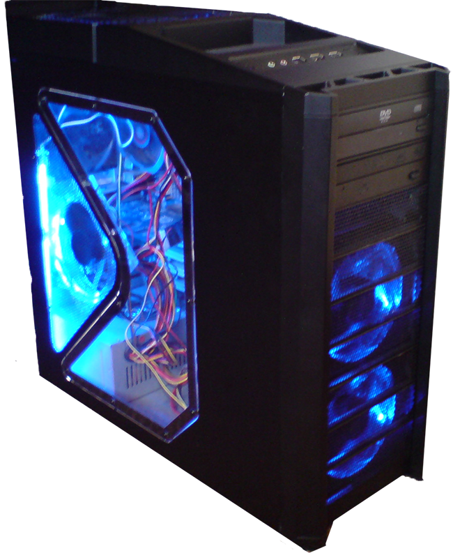

Pick a case that fits the kind of computer you want in the end.
Often people start by choosing a case. There is quite a wide variety of cases out there, from the fancy gaming cases, often liquid cooled and with led lights of several colors, to the basic box. Keep in mind that the case and the motherboard go hand in hand, so you may opt to start there and choose a case second.
Some things to keep in mind when selecting a case for your computer:

The size of your case must fit with its planned use. If you want a case for four hard drives and a DVD drive, you need space for all of that. There are places where these must go, and the average case only has room for two or three hard drives. The size of the case also relates to the size of the motherboard you want to use. See the motherboard section if you want to start there.
For someone building their first computer, it is recommended you buy one with a built in power supply and fan. Again, the motherboard and graphics card will have certain power requirements, so if you are building a high performance or gaming machine, chose those before you select your case with power supply. If a power supply comes with your case, a fan is almost always a part of it as well.
There are several fans that go into a computer. A power supply fan, a CPU fan, maybe a graphics card fan, and perhaps one or more case fans.
The look of your case may also be an important factor. For many, this computer will an important part of your living room, office, or bedroom. Do you want it to look professional? Fun? Do you want it to blend in to the surroundings or stand out?